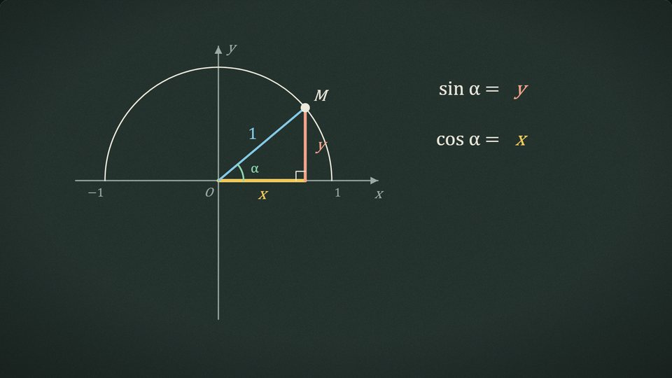
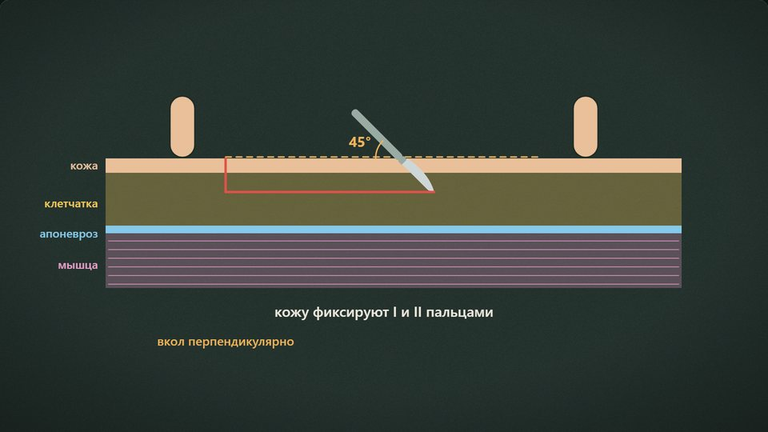

Математика
Синус, косинус и тангенс
Викиучебник «Тригонометрические функции», 4 страницы
- 12 слайдов
- ≈ 5 минут
- 1 проверка и 3 задачи
Прототип · 21 ноября 2026
Каждый слайд проигрывает свою анимацию с голосом и субтитрами и ждёт, пока вы нажмёте «Продолжить». Между слайдами — вопросы с проверкой, в конце итог. Сколько слайдов дать на страницу, решается по содержанию.

Математика
Викиучебник «Тригонометрические функции», 4 страницы

Медицина
Учебник В. В. Кованова, глава 8, 4 страницы